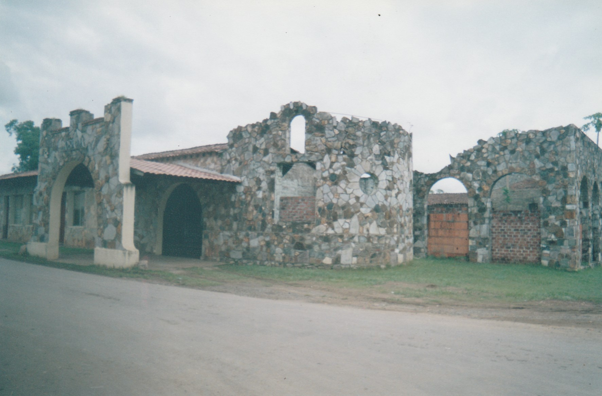

Antecedentes
Cómo nace la feria
La feria se inició en 1900, sin embargo, el proyecto nació dos décadas antes, en 1898, con la realización de una actividad similar, ubicada en los terrenos que ocupa hoy el hospital Sergio Carpintero Núñez, las exposiciones se hacían en pequeños ranchos de paja o penca de palma real.

Inicio
Cómo inicia la feria
A inicios de la década de los años 20, un comité inicia la organización de la feria, con la intención de dar a conocer el potencial ganadero, agrícola y folclórico de Herrera. Los fundadores del evento fueron los doctores David José Núñez, Roso Carrizo, Tomás García y María Cortéz, este último presidió el comité que organizó la feria en 1920.
En sus inicios y ahora
Organización
La Feria, la integraba un comité, elegido por el pueblo, por las fuerzas vivas de la comunidad, después de varios años, estos comités fueron conformados por patronatos, que a su vez son representativos de organizaciones populares, algunos de éstos son los ganaderos, folcloristas, artesanos, comerciantes, empresarios, educadores, bajo la asesoría de la Comisión de Ferias del Ministerio de Desarrollo Agropecuario.